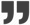

Paul Klee
Paul Klee est un peintre allemand né le 18 décembre 1879 à Münchenbuchsee, près de Berne et mort le 29 juin 1940 dans un hôpital de Locarno dans le canton du Tessin en Suisse.
C'est un des artistes majeurs de la première moitié du XXe siècle, inspirateur d'autres artistes parmi lesquels Zao Wou-Ki pour lequel Claude Roy considère qu'il a été "un médiateur, un recours merveilleux contre deux périls qui menacent alors le jeune artiste."
L'art ne reproduit pas le visible, il rend visible."
Paul Klee
Sa biographie
Klee connaît ses premiers grands succès en 1917 pendant la Première Guerre mondiale. C'est un peintre et un pédagogue apprécié : dès septembre 1920 il est appelé à enseigner au Bauhaus de Weimar fondé par Walter Gropius en 1919, puis en 1931, à l'Académie des beaux-arts de Düsseldorf d'où il est congédié en 1933 par les nationaux-socialistes qui l'attaquent violemment. Exilé en Suisse à partir de 1934, il demande sa naturalisation, mais il ne l'obtient que quelques jours après sa mort en 1940.
Ses cendres ont été inhumées en 1946 au cimetière Schosshalden de Berne. C'est également à Berne que l'architecte Renzo Piano a édifié le Centre Paul Klee, ouvert depuis le 20 juin 2005, et où l'on trouve une très grande variété des œuvres du peintre, depuis ses dessins jusqu'à ses marionnettes.
Son oeuvre
Son fils Félix la définit comme "énigmatique" : elle a posé bien des questions aux critiques d'art car elle suit un cheminement peu commun. De constructive qu'elle était au temps du Bauhaus, elle devient graduellement plus intuitive et, selon Antoni Tàpies, plus spirituelle : "Klee est en occident un de ces privilégiés qui ont su donner au monde de l'art la nouvelle orientation spirituelle qui manque aujourd'hui où les religions semblent faire faillite. On pourrait voir en lui le parfait représentant de ce que Mircea Eliade appelle l'unique création du monde moderne occidental."